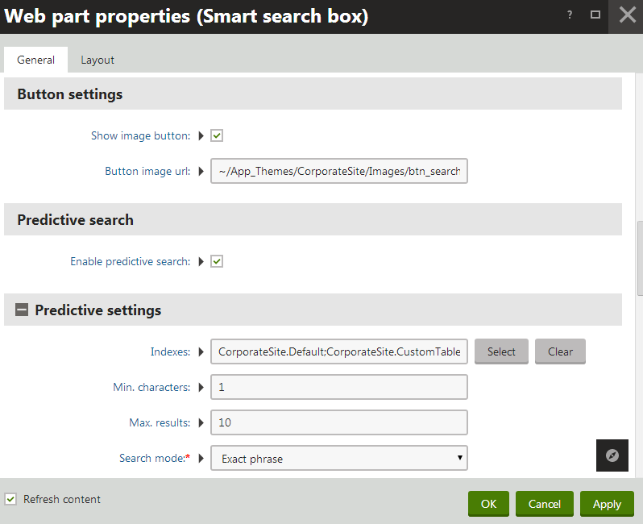
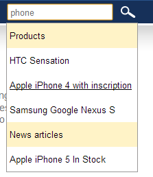
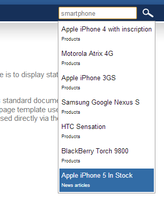

Setting up predictive search using local indexes
Predictive search displays results immediately while users type search expressions. Seeing the results before submitting the search allows users to:
Find out if the entered keywords are relevant
Quickly navigate to results without going through a dedicated search page
The predictive search functionality is implemented into the Smart search box web part. When a user stops typing in the search box for 0.5 seconds, the web part runs a search request for the current text. The predictive search finds results using a set of assigned search indexes. A list of the top results appears directly below the search box. Users can open links to the relevant pages by selecting individual results of the predictive search.
Important: The predictive search functionality described on this page is only available for locally stored indexes. For Azure Search indexes, you can provide similar functionality by setting up the suggestions feature.
Enabling predictive search
To turn on predictive search for a Smart search box:
Open the Pages application.
Edit the page containing your Smart search box on the Design tab.
Configure the Smart search box web part (double-click).
Check the Enable predictive search property.
Assign one or more search indexes through the Indexes property (in the Predictive settings category).
Note
The predictive search can use different indexes than the standard search. The functionality of the main search is always determined by the indexes assigned to the Smart search results web part on the target search results page.
You need to rebuild all search indexes that you plan to use for the predictive search after upgrading to Kentico version 8.
Click OK.
The search box now displays predictive results when users type search expressions. You can customize the appearance or behavior of the predictive search.

Enabling predictive search for the Smart search box
Using the predictive search
When entering text into a search box with predictive search enabled, the results appear shortly after you stop typing. By default, the predictive search separates results into groups. The groups represent the indexes where the search found matching results.
You can navigate directly to the pages linked by individual results of the predictive search:
Click the results in the list
ORMove between results using the up/down arrow keys, and link to the selected item by pressing Enter
Alternatively, you can submit the search request and view the results page like with a standard search box.

Search box displaying the default predictive search results
Customizing the predictive search
To adjust the basic behavior of the predictive search, configure the properties of the Smart search box web part:
Min. characters (Predictive settings category) - sets the minimum number of characters that users need to type into the search box to trigger the predictive search.
Max. results (Predictive settings category) - sets the maximum number of search results that the predictive search displays.
Enable arrow key selection (Predictive results category) - if enabled, users can move between the predictive search results using the up and down arrow keys, and link to the selected result by pressing Enter.
Additionally, you can configure the predictive search just like standard smart search web parts:
Set the Search mode
Add conditions to the search (Search condition)
Determine the order of the results (Search sort)
Set page filtering options
Predictive result groups
Groups help organize the search results if the predictive search uses multiple indexes. The default groups separate the results into sections with captions that match the Display name of the related search index.
To disable the default grouping, uncheck the Group results by index property of the Smart search box web part (in the Predictive results category). It is recommended to disable grouping if your predictive search only uses one search index.
Result content and appearance
Modify the design of the predictive search results through the properties in the Predictive results category of the Smart search box web part.
The content of individual results is determined by the transformation assigned in the Search result transformation property. To allow users to open links for selected search results, include one <a> element with a properly defined href attribute in the transformation code. The URL automatically opens when users select one of the predictive search results using the up/down arrow keys and press Enter.
You can change the following special result items by entering custom HTML content:
More results content - placed after the last search result if the maximum number of predictive results is reached. Use the {0} formatting expression to get the URL of the full search result page assigned to the search box.
No results content - displayed when the predictive search does not find any results.
To define CSS styles for the predictive search, edit the website's main CSS stylesheet.
The Smart search box web part has a default styling that you may want to remove. You can do that in Web parts (application) -> Smart search box -> CSS.
To change the names of the default CSS classes applied to the results, set the following properties of the Smart search box web part (in the Predictive results category):
Predictive results CSS class - specifies the name of the CSS class assigned to the block element that contains the predictive search results.
Selected result CSS class - specifies the name of the CSS class applied to the element containing the selected predictive search result.
Tracking predictive search requests
You can enable or disable tracking for the predictive search through the properties in the Predictive tracking category of the Smart search box web part:
Log internal search activity - if enabled, the system logs every predictive search request as an Internal search on-line marketing activity.
Track web analytics search keywords - if enabled, the site's web analytics log all text submitted to the predictive search as part of the On-site search keywords statistic.
Note: Tracking of predictive search requests may generate a large volume of irrelevant data (activities, keywords). The frequency of the search requests depends on the typing patterns of your website's visitors. Keywords often include incomplete words or fragments.
Example - Customizing the design of predictive search results
The following example shows how to change the appearance of highlighted results in the predictive search on the sample Corporate site. The customization also inserts the name of the related search index directly into individual result items (instead of using categories).
Configuring the Smart search box web part
Open the Pages application for the sample Corporate site.
Select the website root page in the content tree (Corporate Site).
Open the Design tab and double-click the Smart search box web part.
Check the Enable predictive search property.
Select one or more Indexes (in the Predictive settings category).
Uncheck Group results by index (in the Predictive results category).
Click New next to the Search result transformation property (in the Predictive results category). Create the following ASCX transformation:
<divclass="customPredictiveResultItem"><a href='<%# SearchResultUrl() %>'><%# HTMLHelper.HTMLEncode(DataHelper.GetNotEmpty(Eval("Title"),"/")) %></a><span style="font-size: 7pt"><%# CMS.Search.SearchIndexInfoProvider.GetSearchIndexInfo(Eval<string>("index")).IndexDisplayName %></span></div>Click Save and close the dialog.
Save & Close.
Modifying the Smart search box CSS styles
Open the Web parts application.
Select the Smart search box web part in the tree (Full-text search -> Smart search).
Open the CSS tab.
Comment out the following default CSS classes:
/*.predictiveSearchResults .selectedResult {text-decoration: underline;}.predictiveSearchResults a {text-decoration: none;}*/Add the following CSS class definitions:
Note that styles are added directly in the web part for the purpose of this example. The recommended approach for styling web parts is using site stylesheets..customPredictiveResultItem {line-height:160%;margin:2px;}.customPredictiveResultItem a {display:block;color:black;text-decoration:none;}.customPredictiveResultItem.selectedResult {color:white;background-color:#326CA6;}.customPredictiveResultItem.selectedResult a {color:white;text-decoration:none;}Click Save.
Result
If you now try searching using the box in the header of the Corporate site, the results found in the assigned search indexes appear while typing.
Each result shows the name of the related search index.
Selected predictive results are highlighted using a colored background instead of the original underline effect.

Customized predictive search results